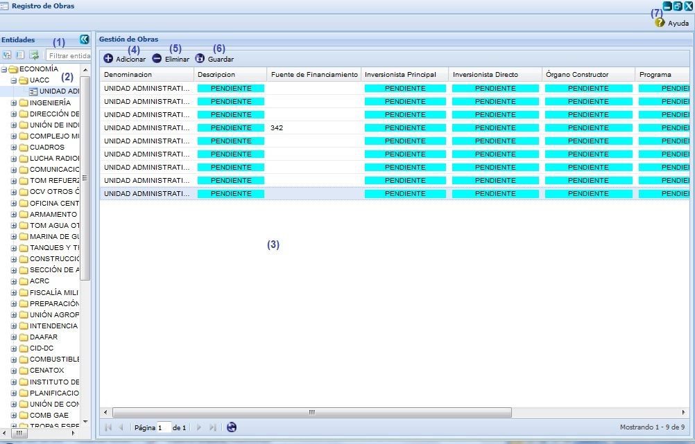

--Inversiones--
Para acceder a esta funcionalidad se seleccionar la opción Inicio\Planificación material\Inversiones\Registro de obras. Una vez seleccionada la funcionalidad, aparecerá en pantalla la interfaz de la misma, ver figura 1.

Figura 1.Interfaz Registro de obras.
Las diferentes opciones que conforman la figura anterior permiten:
- Filtrar entidades por un criterio de búsqueda específico.
- Listar las entidades existentes en el sistema.
- Listar las obras pertenecientes a la entidad seleccionada.
- Adicionar obras, lo primero que debe hacer para realizar esta acción es seleccionar una entidad del panel Entidades, inmediatamente el sistema habilitará el botón Adicionar, al seleccionar el mismo el sistema adicionará una obra con los campos de información en azules y con la palabra pendiente, debe introducir o seleccionar datos en cada campo de la obra adicionada y presionar el botón Guardar, automáticamente el sistema le mostrará un mensaje de información notificando que se realizó la acción satisfactoriamente. Se puede realizar esta acción de manera rápida con la combinación de teclas (Alt + I).
- Eliminar obras, para ejecutar esta funcionalidad se debe seleccionar el elemento que se desea eliminar y presionar el botón Eliminar. Una vez presionado el mismo el sistema le mostrará un mensaje de confirmación que se puede Aceptar o Cancelar según desee, si presiona el botón Aceptar del mensaje de confirmación el sistema mostrará un mensaje de información notificando que se realizó la operación satisfactoriamente, si se presiona el botón Cancelar el sistema cancela la acción y no elimina la obra seleccionada. Se puede realizar esta acción de manera rápida con la tecla (Delete). Si se selecciona una obra que está siendo usada, el sistema mostrará un mensaje de error.
- Guardar los datos que se modifican de cada obra. Se puede realizar esta acción de manera rápida presionando la combinación de las teclas (Alt + G).
- Mostrar ayuda de la funcionalidad. Se puede realizar esta operación seleccionando la combinación de teclas (Alt + H).